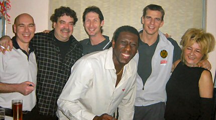

|
Old soldiers never die.... |
Old
soldiers never die....
Voor wie zou deze taart bestemd zijn...?
De gastvrouw in het midden heeft een surprise-party georganiseerd
voor een
onlangs verjarende ex-Rodaspeler.
Wachten op de jarige die nergens vanaf weet.
Een uur later dan gepland komt daar dan Regillio Vrede!
Nadat Regiel van de schrik is bekomen mag hij de champagne
inschenken.
De man rechts is van KEY-DOEK. Hij is tevens een gedurfd kok. Een
van
zijn creaties was venkel in een saus van olie, knoflook en ansjovis (hmm).
Senden en Luijpers kwamen ook nog even buurten. Hier wordt de
Rodameëdsjer-kalender aandachtig doorgebladerd. Uiterst links staat
Victor van Indians, Akerstraat, Kerkrade West. Hij zorgde voor warme worst,
Kasseler en kip.
Het ruitjeshemd is de DJ op de feestavond na Roda -Aachen, de
mevrouw op
de voorgrond is de ex van Gene Hansen en de moeder van Rodagirl
Mandy.
Vrienden van Regiel.

Regillio maakt zich klein om in beeld te blijven. De juffrouw
rechts is van
voorheen " Meetpoint" te Schinveld.
Dit was een leuke avond. Dank aan Ineke en Danielle voor de organisatie.